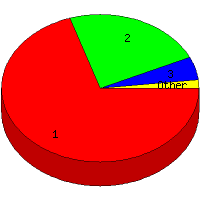

Week of 6/13/2010 to 6/19/2010: Top
4 of
4 File Types (Extensions)
Sorted by Access Count
Individual file types as determined by file extensions. All URLs that
do not contain an extension are counted as directories.

| Rank |
Type |
Accesses |
% |
Bytes |
% |
| 1 |
html
|
124 |
70.06 |
2,604,627 |
90.78 |
| 2 |
Directory (folder)
|
41 |
23.16 |
221,208 |
7.71 |
| 3 |
ico
|
9 |
5.08 |
11,647 |
0.41 |
| 4 |
htm
|
3 |
1.69 |
31,718 |
1.11 |